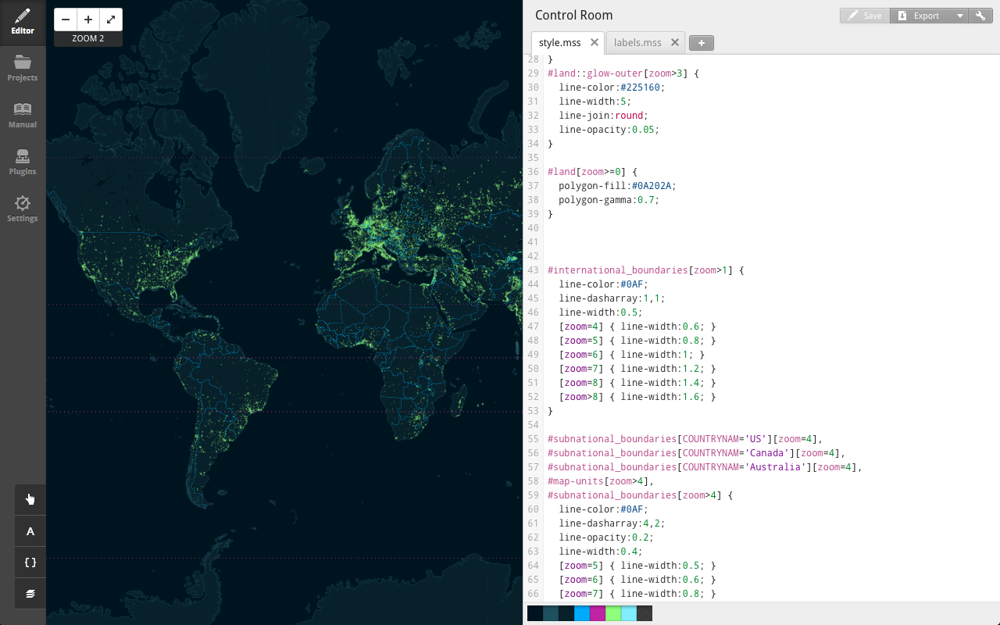

Maps and the Open Web
data - styling - presenting - collaboration
follow along at:
let's define open
"free as in speech and free as in beer"**
i <3 America, thanks 4 the beer
**sometimes subject to attribution/sharealike
i <3 America, thanks 4 the beer, Jonah
**sometimes subject to attribution/sharealike
i <3 America, thanks 4 the beer, Jonah
Why Open?
In 2009, the President released a memo on Transperancy and Open Government which makes 3 strong points:
- Government should be transparent: "Transparency promotes accountability and provides information for citizens about what their Government is doing"
- Government should be participatory: "Public engagement enhances the Government's effectiveness and improves the quality of its decisions"
- Government should be collaborative: "Collaboration actively engages Americans in the work of their Government."
But also.....
freedom to innovate
community driven
save money
DATA
tabular: CSV or JSON
small spatial: GeoJSON
medium spatial: shapefile
large spatial: PostGIS
raster: GeoTIFF
GeoJSON
{
"type": "FeatureCollection",
"features": [
{
"type": "Feature",
"properties": {
"name": "TCC"
},
"geometry": {
"type": "Point",
"coordinates": [
-76.10152244567871,
36.785194906958274
]
}
}
]
}
GeoJSON
make your own at geojson.io
simplify your data at mapshaper.org
export from ArcGIS with esri2open toolbox
Release your data!!
dead simple: City of Williamsburg
fancy: Washington DC
ArcGIS Open Data: City of Chesapeake
Make it offical, and make it a big deal
Proclamations, Resolutions, etc..
Resources at Sunlight Foundation
Styling Data for the Web
ArcGIS
QGIS
Tilemill
TileMill
TileMill
cartoCSS
generates tiles, exports images
photoshop-like filters
TileMill
position overrides
specific zoom level control
filters apply to text also
Web Maps
Too Many Options To Mention
Leaflet.js
But first...
Does your map need to be interactive?
Do you need all those layers?
Does the use = the work?
Leaflet.js
East Breezy Leaflet Demo
Collaboration

GitHub
Versioning for everything
Fork, Pull, and Collaborate
Serve Web Pages, Store Data
GitHub

#maptime
Monthly (or so) meetup for all levels of knowledge to collaborate, learn, and explore maps!
Hampton Roads maptime.github.io/hrva
More Info At maptime.io
Code For AMERICA
Local groups collaborating with municipalities to make their cities better
Hampton Roads codeforhamptonroads.org
Richmond codeforrva.org
More Info At codeforamerica.org
VAMLIS
State Conference In Fall 2015
Quarterly meet ups & other events